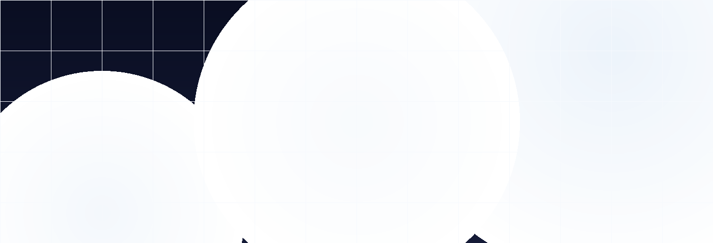
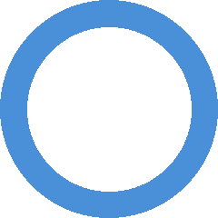
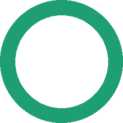
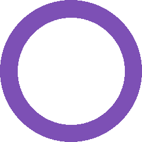
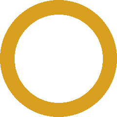

Teknoolajiyada u Qof Walba
Aqoon Tech waxay ahayd fikrad dhashay 2023-kii markii aasaasaheenna Abdi Hassan uu ogaaday in malaayiin Soomaali ah aysan waxba ka garanin teknoolajiyada — maadaama aqoontaasi kii ay ku jirtay luuqadaha ay kuma jiraan Soomaaliga.
Xalka wuxuu ahaa mid fudud: ku qor teknoolajiyada Af-Soomaali, si fudud, si qof walba u fahmi karo — baadiyaha joogana, magaalooyinka jooga, iyo Diasporaka adduunka ku fida labadaba.
Sideen u bilaabannay
2023-kii, Abdi Hassan wuxuu arkay waldiiskii — oo ah macallin jaamacad ah — oo ku dhibaatoonaya fahanka teknoolajiyada. Aqoonyahanka wuxuu ku yiri: "Haddaan Ingiriisiga fiicnayn, teknoolajiyada lama baranaysaa."
Xaaladdan waxay u muujisay khali weyn — milyan Soomaali ah oo xigta aqoonta teknoolajiyada joogaan. Aqoon Tech waxay ahayd jawaabta.
Qiyamkayaga Aasaasiga ah
Aqoonta, Hufnaanta, iyo Barashada — waxa ay Aqoon Tech ku dhisan tahay
Waxaan rumaysanahay in aqoonta teknoolajiyada ay tahay xaq aadanaha kasta. Maqaalladeena waxaa lagu qoray Af-Soomaali si fudud — si qof walba u gaadhi karo, wax barashadii hore ha yeeshee ha yeeshee.
Waxaan la shaqeynaa khubarrada teknoolajiyada si aan ugu xaqiijino saxnimada wax kasta oo aan qorno. Xaqiiqda marka la qoray, la hubiyaa — samaanka waxbarasho ah waxay u baahantahay aaminaad.
Aqoon Tech waxaa dhisay bulshada Soomaalida — waxaana uga shaqeynaynaa bulshada. Akhriyayaashayaga ayaa noo sheegaya waxa ay rabaan baarteen, oo aan ku jawaabno si degdeg ah.
Aqoon Tech Hadafkiisa
Kooxdayada La Kulmi
Kooxda dadaalaysa si teknoolajiyadu noqoto mid Soomaali kasta fahmi karo

Bare teknoolajiyad leh 8+ sano oo sharaxaadda teknoolajiyada qalabka guud u sharaxaysa.

Jaraa'idnimo iyo qorista teknoolajiyada, khusuusan dhigista mawduucyada adag si fudud.

Soo-saara casharro muuqaal oo dhan. Khabiir ku ah sheeko-sheegista muuqaalka waxbarashada.

Waxay hubisaa in nuxurka oo dhan uu saxnahay labada Ingiriisi iyo Soomaali, iyada oo macnaha farsamada ilaalinaysa.
Ma Rabtaa inaad Gacan Siiso?
Haddaad leedahay aqoon teknoolajiyada ama qoraal Soomaali ah, waxaan ku soo dhawaynaa kooxda. Soo nala xiriir si aad uga qaybqaadato ujeedadayada waxbarashada.